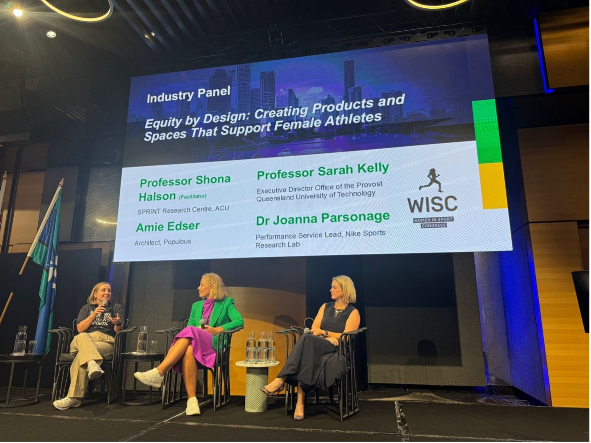
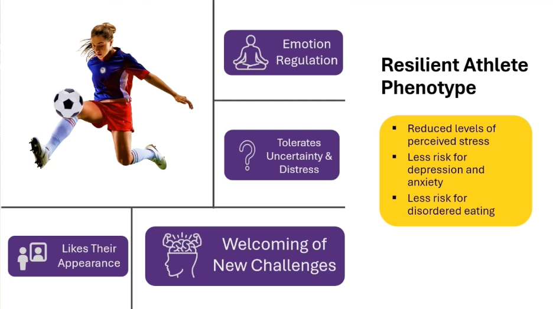
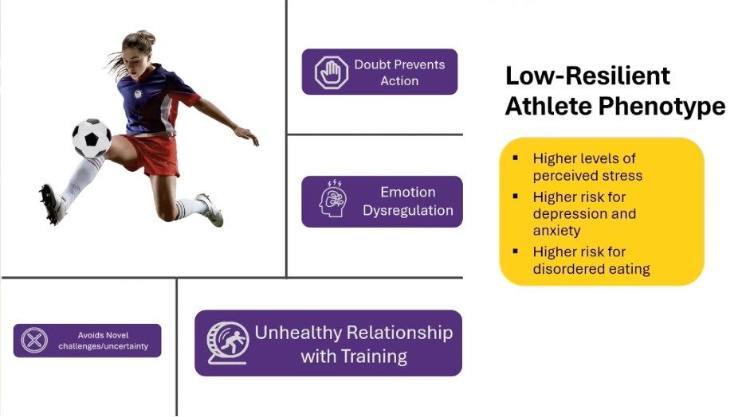
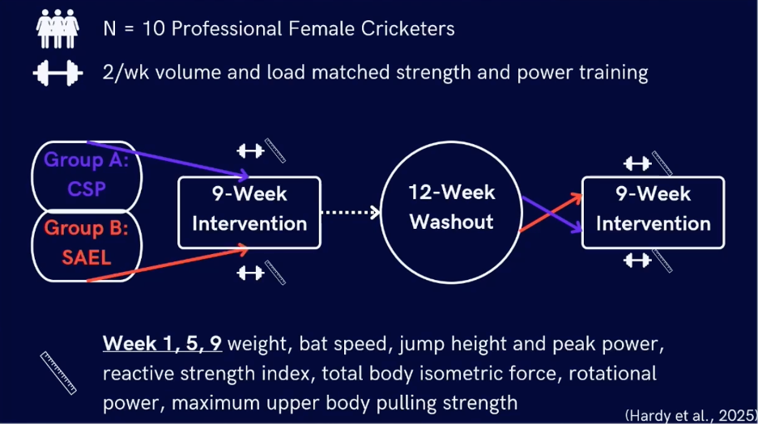
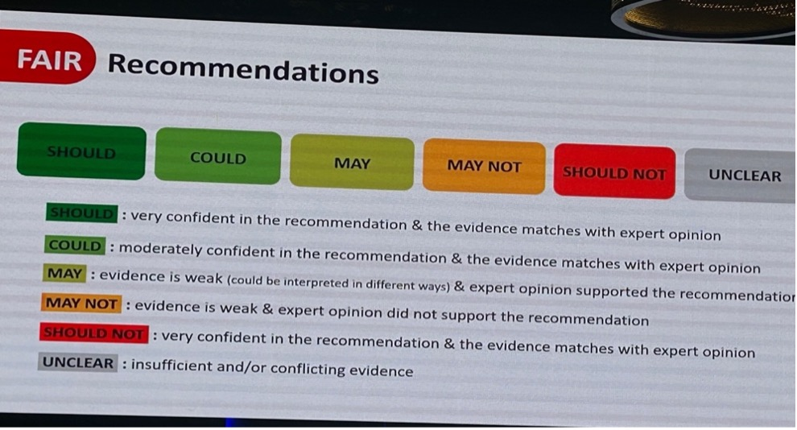

Field Notes from Brisbane, Australia
World-class speakers across physiology, psychology, S&C, endocrinology, and medicine. From fighter pilots to cricketers, from resilience to injury prevention.

WISC 2026 brought together researchers, practitioners, and athletes for a comprehensive exploration of the female athlete's lifecycle — from puberty through elite performance, pregnancy, and retirement.
The conference was strong across performance support pillars: psychology, physiology, endocrinology, medicine, S&C, and physiotherapy. There were standout insights from female fast-jet pilots and Australia's first female astronaut.
But a pattern emerged: most research focused on female athlete health — reproductive systems, hormones, and REDs. Very limited performance research in elite cohorts. In our view, that's a huge gap requiring more high-quality research.
Stewart's research examines psychological resilience in both athletes and combat personnel. Three factors have been consistently found to impact resilience:
A key finding: resilience has two different phenotypes, meaning interventions need to be tailored rather than one-size-fits-all.


App-based technology interventions have shown very positive impacts across populations. One example: Beyond the Battlefield — Resilience Hub, a platform designed for combat personnel that has broader applications in high-performance sport.
This session was closed to filming and photography due to security concerns — all female pilots deliberately keep their identities private due to online trolling.
They don't use the word resilience. They use fortitude — the idea of constantly working toward something as a team, rather than the ability to recover and go again.
A standout detail on their debrief culture: a 20-minute simulation can generate a 5-hour debrief. Every detail of how they can improve — individually and as a team — is examined. The same time is allocated even if the simulation goes perfectly, to maximize the chance of repeating those outcomes.
Equipment is still not designed for women — pilots often have to urinate in flight gear not designed for female anatomy, leading to recurrent UTIs. They also can't fly when menstruating, so many go on contraception just to fulfil duties.
It's striking that in 2026, equipment limitations still restrict female performance in high-stakes environments.
One of the few presentations with direct practical application of strength and power training to performance outcomes.
Bat speed was identified as a modifiable factor, and maximal upper body pull strength was the critical variable in elite female cricketers.
The equipment theme surfaced again: female cricketers are still using one off-the-shelf bat model. Male cricketers tailor bats by weight and other variables. Women don't get that option.

Two presentations — fighter pilots and cricketers — independently surfaced the same problem: equipment designed for men, used by women. From flight suits to cricket bats, the theme is consistent.
A comprehensive scoping review culminating in practical recommendations for female athlete injury prevention, published in the British Journal of Sports Medicine (BJSM).
The standout element was the framework for associations of injury — a structured approach to evaluating the strength of evidence behind each injury risk factor.
This framework could be directly applicable to work being done on the ACL position stand, ensuring statements mirror the standard and amount of empirical evidence currently available — not overstating what we know.

Beyond the sessions, the conference was a chance to connect with researchers and practitioners doing relevant work. Here are the key contacts and what they're focused on.
GAFA's mission is a global approach to knowledge dissemination and accelerating impactful research and innovation. Initiated by the AIS (Australia), UKSI (UK), HPSNZ (New Zealand), and the USOPC (USA), with Canada recently joining. Provides open-access resources and education.
Visit GAFA ↗Health research is essential. Performance research is overdue.
WISC 2026 confirmed what we see in the literature: the women-in-sport space is rich with health research — reproductive health, hormones, REDs — but substantially under-resourced in elite performance. That's a gap our team is positioned to help close.
The cross-domain themes were striking. Two completely unrelated sessions — fighter pilots and cricketers — surfaced the same equipment problem. Resilience research is finding biological phenotypes. And the IOC's injury prevention framework offers a model for how we should structure our own evidence-based recommendations.
The connections made — from wearable tech at UCLA to sports nutrition AI at ACU to the GAFA network — open pathways for collaboration that align directly with our work at the NSRL.
View the full WISC 2026 program ↗